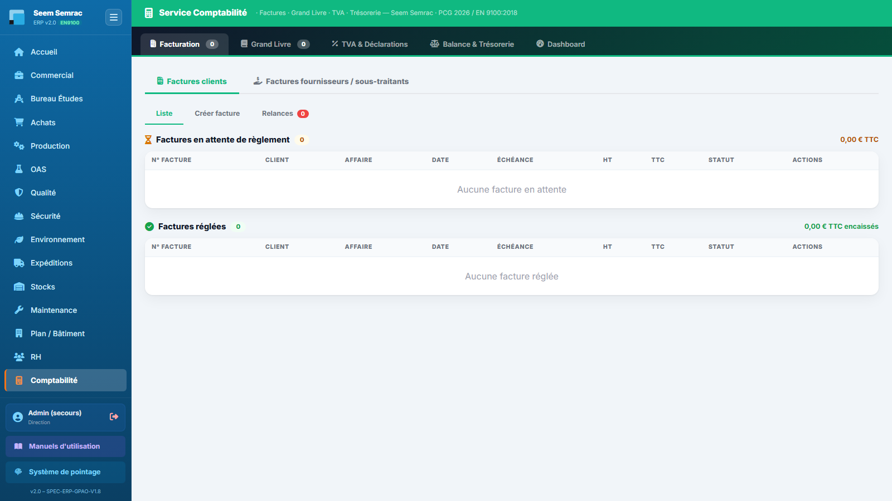
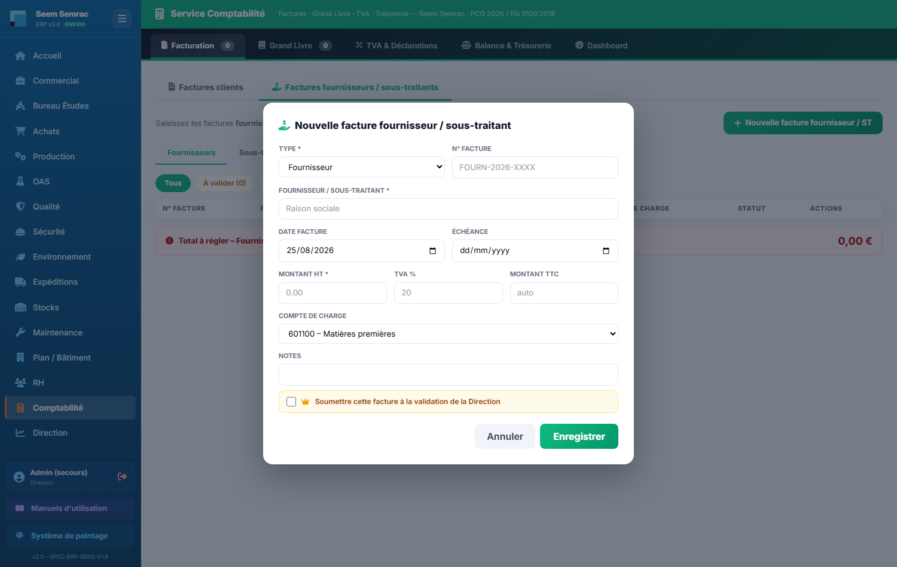
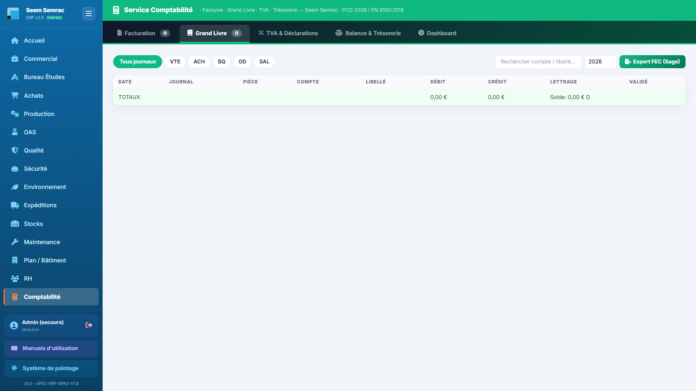
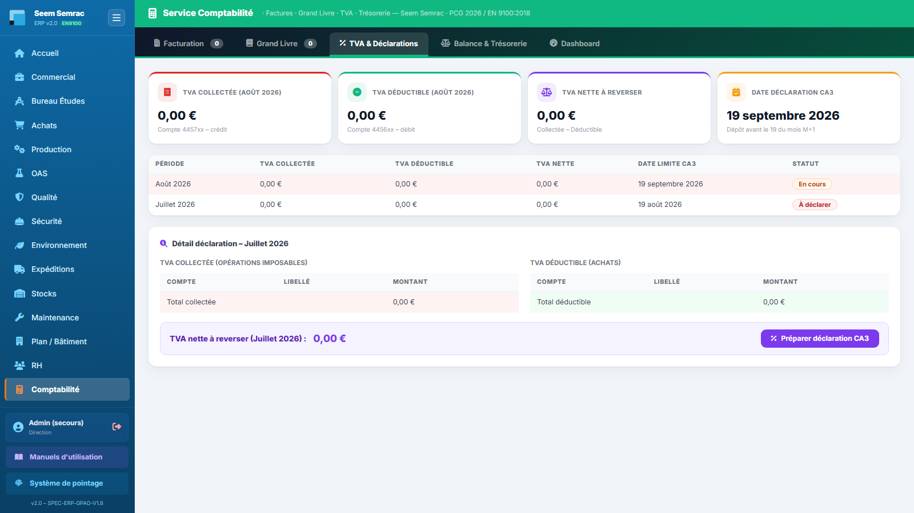
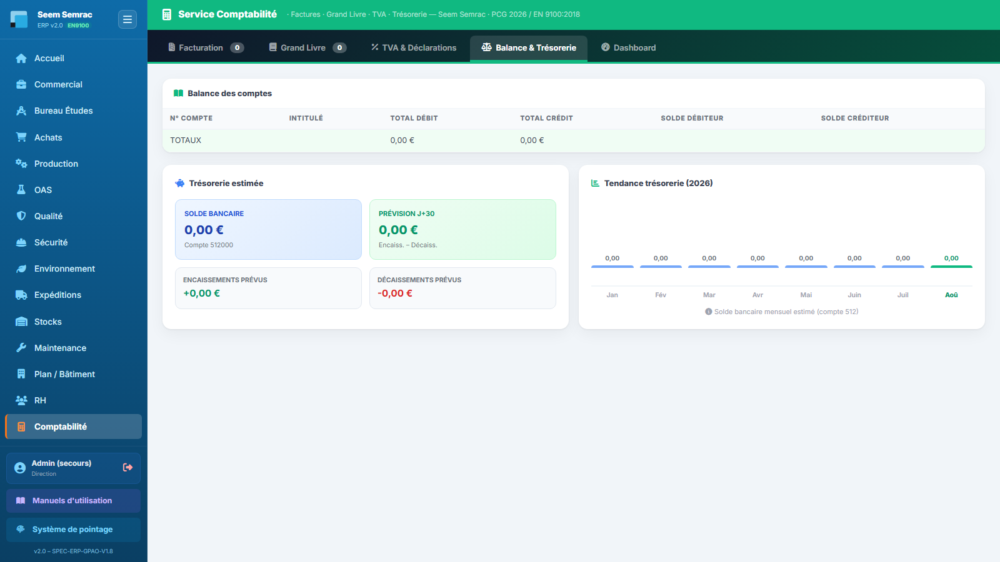
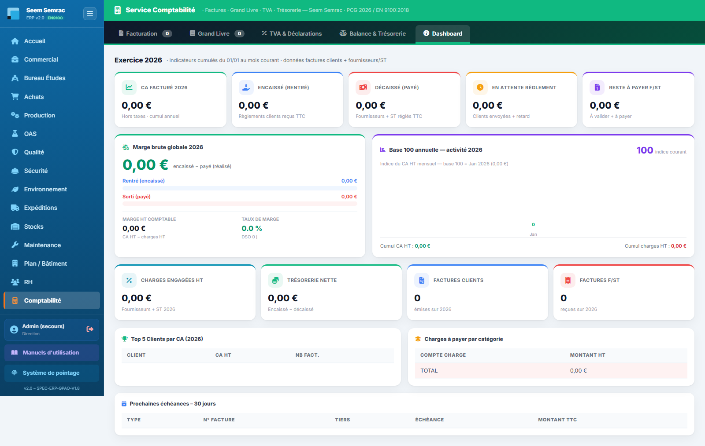

La Comptabilité suit tout l'argent de l'entreprise : les factures clients à encaisser, les factures fournisseurs et sous-traitants à régler, les écritures du Grand Livre (alimentées automatiquement par l'activité), la TVA à déclarer et la trésorerie. Vous apprendrez ici à suivre et encaisser vos factures, saisir et payer les factures fournisseurs, préparer la déclaration de TVA et exporter le FEC pour l'expert-comptable.
👤 Pour qui : Comptable (écriture — l'export FEC est aussi ouvert à la Direction)🧭 Dans l'ERP : Sidebar → Comptabilité🗂 5 onglets
Le principe du service : la comptabilité s'alimente en grande partie toute seule. Chaque facture client émise génère automatiquement une écriture au journal des ventes (VTE), chaque facture fournisseur enregistrée une écriture au journal des achats (ACH) : le Grand Livre, la TVA et la Balance reflètent donc l'activité sans ressaisie. À l'ouverture, la page s'affiche sur l'onglet Facturation ; les pastilles des onglets Facturation et Grand Livre indiquent respectivement le nombre de factures (clients + fournisseurs) et le nombre d'écritures.
1
Facturation
À quoi ça sert. C'est le poste de travail quotidien du comptable : d'un côté les factures clients (suivre les règlements, relancer les retards, encaisser), de l'autre les factures fournisseurs et sous-traitants à valider puis à payer. Tout ce qui est saisi ou soldé ici alimente directement le Grand Livre, la marge brute du Dashboard et la prévision de trésorerie.
Ce que vous voyez
Deux grands volets à bascule en haut de l'onglet : « Factures clients » et « Factures fournisseurs / sous-traitants » — ce dernier porte une pastille rouge avec le nombre de factures restant à traiter (à valider, validées ou à payer). Chaque volet a ensuite ses propres sous-onglets, détaillés ci-dessous.

Facturation — les deux volets à bascule (clients / fournisseurs-ST) et, dessous, les sous-onglets du volet actif.
Factures clients — sous-onglet « Liste »
Deux tableaux superposés : « Factures en attente de règlement » (compteur orange et total TTC en jeu) puis « Factures réglées » (compteur vert et total TTC encaissé). Colonnes : N° Facture, Client, Affaire, Date, Échéance, HT, TTC, Statut et Actions. Les statuts possibles : Brouillon, Envoyée, Partiel. (partiellement payée), Payée, En retard (accompagné du nombre de jours de dépassement J+X en rouge) et Litige (badge violet). Une petite étiquette « partielle » à côté du numéro signale une facture émise sur une livraison partielle. Selon le statut, trois boutons d'action : « Envoyer » (brouillons uniquement), « Payée » (toute facture envoyée non soldée) et « PDF » (toujours disponible).
Pas à pas — suivre et encaisser une facture client
Repérez la facture dans le tableau « Factures en attente de règlement » ; l'échéance et l'éventuel J+X vous disent si elle est en retard.
Pour produire le document à transmettre, cliquez « PDF » : une fenêtre d'impression s'ouvre avec la facture complète au logo Seem Semrac (client, affaire, lignes, totaux HT / TVA / TTC, mention « PAYÉE » ou « EN ATTENTE DE RÈGLEMENT »). Imprimez ou enregistrez en PDF depuis le navigateur.
Si la facture est encore Brouillon, cliquez « Envoyer » : l'ERP confirme l'envoi et la facture passe au statut Envoyée.
Quand le règlement du client arrive en banque, cliquez « Payée » : la facture passe au statut Payée, la page se recharge en douceur et la facture bascule dans le tableau « Factures réglées ». L'encaissement remonte aussitôt dans le Dashboard et l'historique des règlements.
Factures clients — sous-onglet « Créer facture »
Un formulaire pour émettre une facture client manuelle. Le montant HT saisi calcule automatiquement la TVA à 20 % et le TTC (champs grisés, non modifiables). Le bouton « Créer la facture » confirme la création (« Facture créée. Prête à envoyer. ») ; « Annuler » ramène à la liste.
Champ
Saisie
Obligatoire
Explication
Client
Liste déroulante
Oui
Choisi parmi les clients déjà facturés dans l'ERP.
N° Affaire
Texte (ex. CMD-2026-xxx)
Oui
Rattache la facture à l'affaire ; elle apparaîtra dans la fiche 360 de l'affaire côté Commercial.
Date facture
Date
Oui
Date d'émission.
Date d'échéance
Date
Oui
Date limite de règlement ; sert au calcul des retards (J+X) et des relances.
Désignation / Prestations
Texte libre
Oui
Détail des prestations ou références facturées.
Montant HT (€)
Nombre
Oui
Sa saisie remplit automatiquement TVA et TTC.
TVA 20 % (€)
Calculé
—
Champ automatique, non modifiable.
Montant TTC (€)
Calculé
—
Champ automatique, non modifiable.
Mode de paiement
Liste : Virement / Chèque / Prélèvement / LCR
Non
Mode de règlement attendu.
Notes internes
Texte libre
Non
Observations, conditions particulières — visibles en interne.
Bon à savoir : la plupart des factures clients ne se créent pas ici — elles sont générées automatiquement par l'ERP au moment de la livraison (bon de livraison client, service Expéditions), y compris pour les livraisons partielles. Ce formulaire sert aux facturations manuelles ou exceptionnelles.
Factures clients — sous-onglet « Relances »
Le sous-onglet porte une pastille rouge avec le nombre de factures à relancer (toutes les factures Envoyée, Partiel. ou En retard). Un bandeau ambre récapitule ce nombre et le montant total en jeu. Le tableau affiche N° Facture, Client, Échéance (avec J+X si dépassée), Montant TTC, Statut, Nb relances déjà effectuées, et un bouton vert « Envoyer relance » par ligne.
Ouvrez le sous-onglet Relances et triez mentalement par urgence : les J+X les plus élevés d'abord.
Cliquez « Envoyer relance » sur la ligne concernée : l'ERP confirme (« Relance envoyée à [client]. Notification email déclenchée. »).
La colonne Nb relances vous permet de suivre l'historique : au-delà de 2 relances sans effet, envisagez le passage en Litige avec la Direction.
Factures fournisseurs / sous-traitants — saisir une facture (« À régler »)
Le second volet s'ouvre sur une barre d'action : un rappel (« Saisissez les factures fournisseurs et sous-traitants à régler — elles alimentent la marge brute du dashboard ») et le bouton vert « Nouvelle facture fournisseur / ST » qui ouvre la fenêtre de saisie. Dessous, quatre sous-onglets : Fournisseurs, Sous-traitants, Historique règlements et Énergie / EDF.
Cliquez « Nouvelle facture fournisseur / ST » et remplissez la fenêtre (champs détaillés ci-dessous). Le TTC se calcule automatiquement à partir du HT et du taux de TVA.
Si le montant le justifie, cochez « Soumettre cette facture à la validation de la Direction » : une demande de validation est créée dans le service Direction et un badge de décision (accordée / refusée) s'affichera ensuite sur la ligne de la facture.
Cliquez « Enregistrer » : la facture apparaît dans la liste avec le statut À valider.
Contrôlez la facture (rapprochement avec le bon de commande et le bon de livraison côté Expéditions), puis cliquez « Valider » : elle passe au statut prêt au règlement.
Au moment du règlement, cliquez « Payer » : la facture passe Payée à la date du jour (mode Virement) et le Dashboard est mis à jour.

Nouvelle facture fournisseur / ST — le TTC se calcule seul ; la case jaune du bas soumet la facture à la validation de la Direction.
Champ
Saisie
Obligatoire
Explication
Type
Liste : Fournisseur / Sous-traitant
Oui
Détermine le sous-onglet dans lequel la facture sera classée.
N° Facture
Texte (ex. FOURN-2026-XXXX)
Non
Numéro porté sur la facture du fournisseur ; attribué automatiquement si laissé vide.
Fournisseur / Sous-traitant
Texte (raison sociale)
Oui
Nom du tiers — refusé s'il est vide.
Date facture
Date
Non
Pré-remplie à la date du jour à l'ouverture de la fenêtre.
Échéance
Date
Non
Date limite de paiement ; alimente les échéances du Dashboard et la prévision de trésorerie.
Montant HT
Nombre
Oui (> 0)
Montant hors taxes — refusé s'il est nul.
TVA %
Nombre
Non
20 % par défaut ; modifiable.
Montant TTC
Calculé
—
Recalculé automatiquement à chaque saisie du HT ou du taux.
Compte de charge
Liste : 601100 – Matières premières / 604100 – Sous-traitance / 606100 – Consommables / 606300 – Énergie / 615000 – Entretien-maintenance / Autres
Non
Classe la dépense ; sert au tableau « Charges à payer par catégorie » du Dashboard et à l'échéancier EDF.
Notes
Texte
Non
Affichées sous forme d'icône d'alerte au survol de la ligne.
Validation Direction
Case à cocher
Non
Envoie la facture dans la file « À valider » du service Direction.
Sous-onglets « Fournisseurs » et « Sous-traitants »
Chaque sous-onglet liste ses factures avec les colonnes N° Facture, Fournisseur (ou Sous-traitant), Date, Échéance, HT, TTC, Compte charge, Statut et Actions. Statuts : À valider, Validée, À payer, Payée et Litige (badge violet) ; un second badge indique le cas échéant la décision de la Direction. Sur le sous-onglet Fournisseurs, des pastilles filtrent la liste : Tous, À valider (n), À payer (n), Litiges. En bas de chaque liste, un bandeau rouge affiche le total à régler (factures à payer et validées).
Sous-onglet « Historique règlements »
Toutes les factures payées, clients comme fournisseurs, dans un seul tableau trié du règlement le plus récent au plus ancien : Type (étiquette CLIENT bleue ou FOURN. orange), N° Facture, Tiers, Date paiement, Mode de règlement et Montant TTC (en vert pour les encaissements clients, en rouge pour les décaissements fournisseurs). C'est votre journal de caisse consultable en un coup d'œil.
Sous-onglet « Énergie / EDF »
L'échéancier des factures EDF : mensualités estimées et régularisation annuelle. Chaque échéance est une facture fournisseur au compte 606300 – Énergie ; l'ERP regroupe ici automatiquement les factures de ce compte (ou dont le fournisseur évoque EDF / électricité / énergie), triées par échéance. Trois tuiles résument Total EDF, Payé et Reste à payer (report) — ce report est repris automatiquement dans la prévision de trésorerie. Le bouton orange « Nouvelle échéance EDF » ouvre la fenêtre de saisie habituelle, pré-remplie (fournisseur EDF, compte 606300 – Énergie, numéro EDF-année) : il ne reste qu'à saisir le montant et l'échéance. La validation et le paiement se font ensuite avec les mêmes boutons « Valider » / « Payer » que les autres factures.
Règles & points d'attention
Chaque facture émise ou enregistrée génère automatiquement son écriture comptable (journal VTE côté ventes, ACH côté achats) : ne créez jamais d'écriture à la main en double.
Le total du bandeau rouge « Total à régler » ne compte que les factures à payer et validées — les factures encore « à valider » n'y figurent pas mais restent dans la pastille rouge du volet.
Les factures fournisseurs marquées payées le sont à la date du jour, en mode Virement : soldez-les le jour effectif du règlement.
Une facture soumise à la Direction reste réglable normalement : le badge de décision est un avis visible sur la ligne, pas un blocage technique. Attendez la décision avant de payer les montants concernés.
Attention : le bouton « PDF » ouvre la facture dans une fenêtre surgissante — si votre navigateur bloque les pop-ups, l'ERP vous le signale : autorisez les pop-ups pour ce site, sinon aucune fenêtre d'impression ne s'ouvrira.
Astuce : traitez les factures fournisseurs en deux temps avec les pastilles de filtre : d'abord « À valider » (contrôle facture / commande / réception), puis « À payer » le jour des règlements. Vous viderez la pastille rouge du volet méthodiquement.
2
Grand Livre
À quoi ça sert. Le Grand Livre est le registre de toutes les écritures comptables de l'entreprise, classées par journal. Il s'alimente automatiquement : facturation client → journal des ventes, facture fournisseur → journal des achats. C'est ici que vous contrôlez les écritures, recherchez une pièce et exportez le FEC pour Sage ou l'expert-comptable.
Ce que vous voyez
En haut, des pastilles de filtre par journal : Tous journaux, puis VTE (ventes, badge bleu), ACH (achats, orange), BQ (banque, vert), OD (opérations diverses, gris) et SAL (salaires, violet). À droite : un champ « Rechercher compte / libellé… » qui filtre le tableau au fil de la frappe, un champ année d'exercice et le bouton vert « Export FEC (Sage) ». Le tableau liste chaque écriture : Date, Journal (badge), Pièce (référence du document d'origine), Compte, Libellé, Débit (en bleu), Crédit (en rouge), Lettrage et Validé (coche verte = écriture validée, horloge orange = en attente). La ligne TOTAUX du bas affiche le total débit, le total crédit et le solde (D ou C).

Grand Livre — les pastilles de journaux, la recherche, le bouton « Export FEC (Sage) » et les totaux débit / crédit en pied de tableau.
Pas à pas — contrôler les écritures et exporter le FEC
Filtrez par journal (par exemple VTE pour ne voir que les ventes) ou tapez un numéro de compte ou un mot du libellé dans la recherche : le tableau se réduit instantanément.
Vérifiez l'équilibre : sur la ligne TOTAUX, débit et crédit doivent être égaux (solde nul) — un écart signale une anomalie à investiguer.
Pour l'export : saisissez l'année d'exercice dans le petit champ (année en cours par défaut), puis cliquez « Export FEC (Sage) ». Le Fichier des Écritures Comptables se télécharge, prêt à être importé dans Sage ou transmis à l'expert-comptable.
Règles & points d'attention
Le FEC (Fichier des Écritures Comptables) est le format légal exigé par l'administration fiscale : c'est le livrable à transmettre à l'expert-comptable en fin d'exercice.
L'export FEC est réservé aux rôles Comptable et Direction.
La colonne Pièce fait le lien avec le document d'origine (numéro de facture) : c'est votre piste d'audit entre une écriture et l'onglet Facturation.
Le lettrage rapproche une facture de son règlement (même code sur les deux écritures) ; une écriture non lettrée correspond à une facture non soldée.
Astuce : la recherche accepte aussi bien un début de compte (« 411 » pour tous les clients) qu'un mot du libellé (le nom d'un client, par exemple) — combinez-la avec un filtre de journal pour cibler très vite une écriture.
3
TVA & Déclarations
À quoi ça sert. Cet onglet calcule automatiquement votre TVA à partir des écritures du Grand Livre : TVA collectée sur les ventes, TVA déductible sur les achats, et TVA nette à reverser. Il vous rappelle l'échéance de la déclaration CA3 et fournit le détail justificatif compte par compte du mois à déclarer.
Ce que vous voyez
Quatre tuiles pour le mois en cours : TVA Collectée (comptes 4457xx, au crédit), TVA Déductible (comptes 4456xx, au débit), TVA nette à reverser (collectée − déductible) et Date déclaration CA3 (dépôt avant le 19 du mois suivant). Dessous, un tableau des deux périodes : le mois courant avec le statut En cours et le mois précédent avec le statut À déclarer, chacun avec ses montants collectée / déductible / nette et sa date limite CA3. Enfin, le bloc « Détail déclaration » du mois précédent présente côte à côte les écritures de TVA collectée et de TVA déductible (compte, libellé, montant, totaux), un bandeau violet avec la TVA nette à reverser et le bouton « Préparer déclaration CA3 ».

TVA & Déclarations — les tuiles du mois en cours, le tableau des périodes et le détail justificatif du mois à déclarer.
Pas à pas — préparer la déclaration mensuelle
En début de mois, ouvrez l'onglet : la ligne du mois précédent porte le statut À déclarer avec sa date limite (le 19 du mois en cours).
Contrôlez le bloc « Détail déclaration » : chaque montant de TVA doit correspondre à une facture identifiable par son libellé. Un doute ? Retrouvez l'écriture dans le Grand Livre (recherche « 4457 » ou « 4456 »).
Relevez la TVA nette à reverser du bandeau violet, puis cliquez « Préparer déclaration CA3 » : l'ERP confirme la préparation de la déclaration.
Reportez les montants sur le portail des impôts (télédéclaration CA3) avant la date limite — l'ERP prépare les chiffres, la télétransmission reste à faire sur le site officiel.
Règles & points d'attention
Les montants sont calculés en direct depuis les écritures : une facture saisie en retard dans le mois modifie la TVA affichée — saisissez les factures fournisseurs sans attendre.
Si la TVA déductible dépasse la collectée, la TVA nette est négative : c'est un crédit de TVA à reporter ou à demander en remboursement.
La date limite affichée est le 19 du mois suivant la période : anticipez de quelques jours pour garder le temps de contrôler.
Attention : l'ERP ne télédéclare pas à votre place. « Préparer déclaration CA3 » rassemble les chiffres — la déclaration officielle se fait sur le portail des impôts, avec ces montants.
4
Balance & Trésorerie
À quoi ça sert. La balance des comptes donne la photographie comptable de l'entreprise : total débit, total crédit et solde de chaque grand compte. La partie trésorerie répond à la question quotidienne du dirigeant : combien avons-nous en banque, et à combien serons-nous dans 30 jours compte tenu des factures à encaisser et à payer ?
Ce que vous voyez
En haut, la Balance des comptes : un tableau avec N° Compte, Intitulé, Total Débit, Total Crédit, Solde Débiteur (bleu) et Solde Créditeur (rouge). Les grands comptes du plan comptable y figurent — 411 Clients, 401 Fournisseurs, 512 Banque, 531 Caisse, 421 et 431 (personnel et cotisations), 601 Achats matières premières, 604 Sous-traitance, 606 Énergie / fournitures, 607 Marchandises, 622 Honoraires, 641 Salaires, 681 Dotations, 701 / 706 / 707 (ventes et prestations), TVA collectée et déductible. Chaque ligne agrège tous les sous-comptes de sa racine, et les comptes sans mouvement sont masqués. En bas, deux cartes côte à côte : « Trésorerie estimée » — Solde bancaire (compte 512, caisse comprise), Prévision J+30 (vert si positive, rouge sinon), Encaissements prévus et Décaissements prévus — et « Tendance trésorerie », un graphique en barres du solde bancaire mois par mois depuis janvier, le mois le plus récent en vert.

Balance & Trésorerie — la balance par compte en haut, la trésorerie estimée et la tendance mensuelle en bas.
Pas à pas — lire la prévision de trésorerie
Partez du Solde bancaire : c'est le solde réel du compte banque (et de la caisse) reconstitué depuis les écritures.
Les Encaissements prévus additionnent les factures clients non payées dont l'échéance tombe dans les 30 jours ; les Décaissements prévus, les factures fournisseurs et sous-traitants non payées à échéance dans les 30 jours — y compris le report EDF.
La Prévision J+30 = solde bancaire + encaissements − décaissements. Si elle vire au rouge, agissez en amont : relancez les clients (onglet Facturation → Relances) ou étalez des règlements fournisseurs.
La Tendance trésorerie montre si le solde s'améliore ou se dégrade sur l'année : une pente descendante régulière mérite une alerte à la Direction.
Règles & points d'attention
La fiabilité de la prévision dépend des dates d'échéance : une facture saisie sans échéance n'entre pas dans le calcul des 30 jours.
La balance doit être équilibrée : la ligne TOTAUX affiche le même montant en débit et en crédit. Un déséquilibre signale une écriture anormale — contrôlez au Grand Livre.
Les soldes « Clients » (411) et « Fournisseurs » (401) de la balance recoupent les encours de l'onglet Facturation : c'est un bon contrôle croisé mensuel.
Astuce : consultez cet onglet chaque lundi matin — cinq minutes suffisent pour vérifier le solde, la prévision J+30 et repérer une échéance fournisseur importante à venir.
5
Dashboard
À quoi ça sert. Le tableau de bord financier de l'exercice : chiffre d'affaires facturé, encaissements et décaissements, marge brute, activité mensuelle en base 100, alertes sur les retards et litiges, meilleurs clients et prochaines échéances. C'est la synthèse à présenter à la Direction — elle se met à jour automatiquement à chaque facture émise ou soldée.
Ce que vous voyez
Un bandeau « Exercice AAAA » précise l'année de référence (la plus récente présente dans les factures) : tous les indicateurs sont cumulés du 1er janvier au mois courant. Puis, de haut en bas :
5 tuiles principales : CA facturé (HT, cumul annuel), Encaissé (règlements clients reçus TTC), Décaissé (fournisseurs + ST réglés TTC), En attente règlement (factures clients envoyées, partielles ou en retard) et Reste à payer F/ST (factures à valider + à payer).
Marge brute globale : le chiffre clé encaissé − payé (le réalisé, en vert ou rouge), deux barres comparant « Rentré » et « Sorti », puis la marge HT comptable (CA HT − charges HT), le taux de marge et le DSO (délai moyen de paiement clients, en jours).
Base 100 annuelle : l'indice mensuel du CA HT, base 100 = premier mois facturé de l'année. Barres vertes quand le mois progresse, rouges quand il recule, avec l'indice courant en grand et les cumuls CA HT / charges HT dessous.
4 tuiles secondaires : Charges engagées HT, Trésorerie nette (encaissé − décaissé), nombre de factures clients émises et nombre de factures fournisseurs / ST reçues.
Alertes : un bandeau rouge « Factures en retard (n) » détaille chaque facture concernée (numéro, client, montant, J+X, nombre de relances) ; un bandeau ambre « Litiges en cours » liste les litiges avec leurs notes.
Top 5 Clients par CA (client, CA HT, nombre de factures) et Charges à payer par catégorie (par compte de charge, avec total) côte à côte.
Prochaines échéances – 30 jours : les échéances proches, clients (étiquette bleue) et fournisseurs (étiquette orange) confondus, triées par date, avec J+X en rouge si l'échéance est déjà dépassée.

Dashboard — les tuiles de l'exercice, la marge brute « rentré / sorti » et la base 100 mensuelle du CA.
Pas à pas — la revue mensuelle en 4 points
Vérifiez la marge brute réalisée (encaissé − payé) : c'est l'argent réellement gagné, indépendamment de ce qui reste à encaisser.
Comparez-la à la marge HT comptable : un gros écart signifie que des factures clients traînent — contrôlez le DSO et le bandeau des retards.
Balayez les alertes : chaque facture en retard doit avoir une relance récente (le compteur de relances est affiché) ; chaque litige, un plan d'action.
Terminez par Prochaines échéances pour anticiper la semaine : les lignes fournisseurs vous donnent les sorties d'argent à préparer, les lignes clients les encaissements à surveiller.
Règles & points d'attention
Le Dashboard ne se remplit pas à la main : il reflète les factures et statuts de l'onglet Facturation. Un chiffre étonnant se corrige donc là-bas, jamais ici.
La base 100 mesure l'évolution relative de l'activité, pas sa valeur absolue : un indice 120 signifie « 20 % de mieux que le premier mois facturé de l'année ».
Le DSO se surveille dans la durée : s'il s'allonge de mois en mois, vos clients paient de plus en plus tard — intensifiez les relances.
Astuce : avant une réunion de Direction, ouvrez cet onglet et l'onglet Balance & Trésorerie côte à côte : le premier raconte l'exercice, le second dit ce qu'il y a en banque et à 30 jours. Les deux ensemble font le point financier complet.